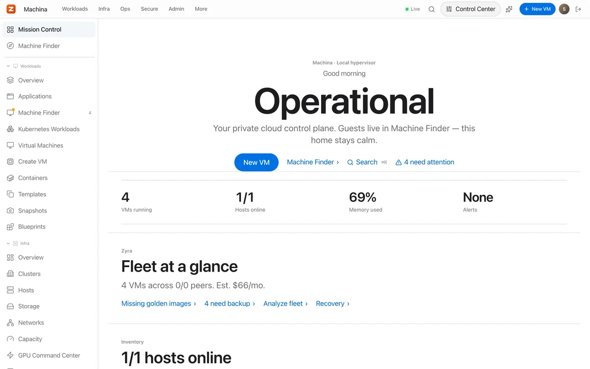
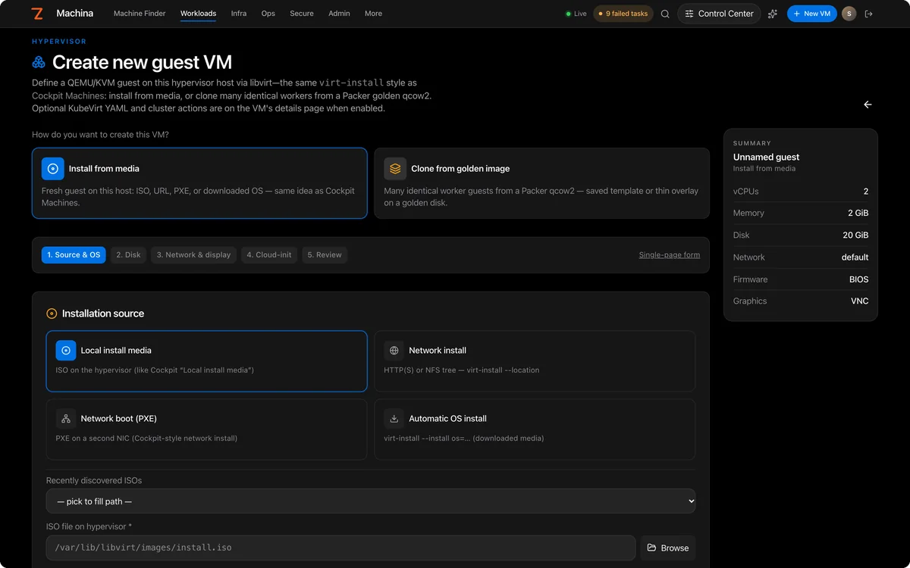
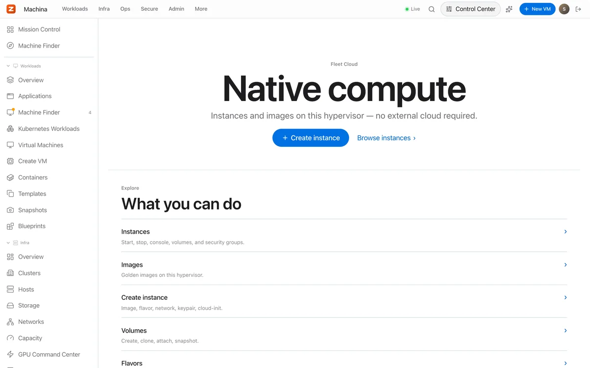
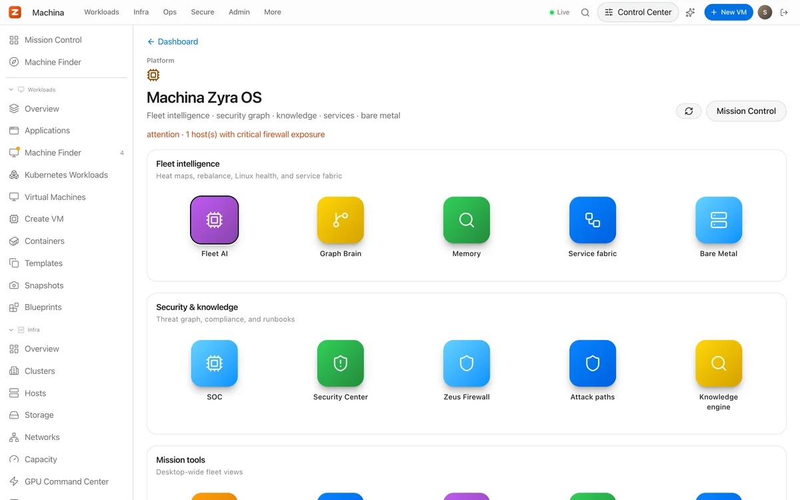
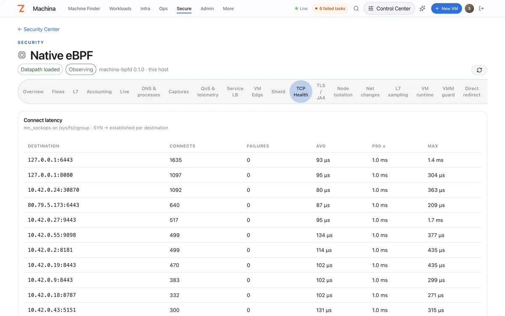

Zyvor · private cloud
Machina
Your metal. Your cloud.
The private cloud you can install before lunch. VMs, browser consoles, fleet HA and DRS, an OpenStack-style self-service cloud, a native eBPF datapath and AI operations, from a handful of Rust services on plain Linux and KVM.
Linux and KVM · source-available · native Mac app runs without a key; for a 30-day trial key, email sales@zyvor.dev

A cloud one person can install.
Machina trades OpenStack's hyperscale multi-tenancy for a private cloud for the fleets you own: a lab, a branch, a sovereign region, a VMware exit.
Features
Virtual machines
Every VM operation, in one place.
Create, clone, snapshot, back up and migrate. Cloud-init, GPU and PCI passthrough, networks and storage pools, from one dashboard, a REST API, a CLI and a Terraform provider over the same model.

Fleet Cloud
Self-service, like a public cloud.
Flavors, images, instances, volumes, security groups, key pairs, floating IPs, projects and load balancers, with an EC2-compatible API so awscli, boto3 and Terraform's aws provider work with an endpoint override. It is a compatibility layer over Machina's own objects, not AWS.

Zyra AI
An operator that asks first.
Diagnostics across the fleet, incident correlation and natural-language operations, with an approval queue in front of every change. Bring your own LLM provider; keys are encrypted at rest.

Networking and security
Networking in the kernel.
Machina ships its own eBPF datapath, machina-bpfd, instead of bolting on a separate firewall agent: load balancing, a DDoS shield, VM isolation and flow visibility.

Built in, not bolted on.
Consoles in the browser
noVNC, SPICE, serial and SSH are proxied by the daemon itself, behind the same RBAC and audit log as everything else.
A fleet, not a host
Add hypervisors with a gRPC agent over TLS. The controller keeps desired state, fails VMs over when a host dies, balances load with DRS and live-migrates between hosts.
SQLite or PostgreSQL
SQLite is built in for a lab or one or two hosts. Move to PostgreSQL for large fleets or several controllers.
A way off OpenStack
Keystone, Nova, Glance, Cinder and Neutron compatibility on the controller, and an importer. A smoke set, not a full drop-in.
Honest about what is proven.
AI asks first
Every change waits for a human approval. Every AI action is checked afterwards and can be rolled back.
Gaps, stated plainly
Hyperscale multi-tenancy and OVN, VXLAN or BGP as Neutron are out of scope.
Proven and not proven
What is proven on a real host and what is not is written down in docs/claims.md.
Specs and requirements.
- Server
- Linux with libvirt and KVMFour Rust services: machina-daemon, machina-controller, machina-agent and machina-bpfd.
- Release
- 0.4.1amd64 and arm64 packages (deb and rpm) and tarballs on the release page.
- Install
- ./machinactl deployDependencies, build, install, start and verify.
- Database
- SQLite or PostgreSQLEmbedded SQLite by default.
- Mac app
- 0.5.0Native client for a Machina daemon and fleet controller. Apple silicon, macOS 15 or later, notarized.
- Licence
- Zyvor Production License v1.0Source-available. Free for non-production use.
Honest limits
Bare-metal provisioning is verified on VMs and BMC emulators, not yet on physical servers. Import from a real OpenStack cloud has not been run end to end. The OpenStack compatibility layer covers a smoke set, not every microversion or ecosystem project. Hyperscale multi-tenancy is out of scope.
Get started in three steps.
Install the server
On a Linux host with libvirt and KVM:
git clone https://github.com/zyvorai/zyvor-machina.git machina && cd machina && ./machinactl deploy. Packages and tarballs are on the release page.Open the console
A browser UI is served by the daemon on port 5092. Follow the Quickstart to add a controller, a node, a VM and a backup.
Optional: the Mac app
Download
Machina-0.5.0.dmgbelow, drag Machina to Applications and ask sales@zyvor.dev for a 30-day trial key.
Machina for macOS 0.5.0 · SHA-256
edc3a7a9404858eb6651755c753c046b71132c6325a241d4e7218064c0bfaa75Verify: echo "edc3a7a9404858eb6651755c753c046b71132c6325a241d4e7218064c0bfaa75 Machina-0.5.0.dmg" | shasum -a 256 -c
Download Machina-0.5.0.dmgMac app release pageServer quickstart
Licence and pricing.
Machina is source-available under the Zyvor Production License v1.0. Running it needs an annual subscription: USD 300 per CPU socket per year worldwide (excl. tax), or ₹29,699 in India (incl. 18% GST). Plans, support levels and terms are in the subscription model.
The Mac app has a 30-day trial key from sales@zyvor.dev. To keep using it afterwards, get a licence at zyvor.dev/buy: USD 40 per Mac per year, or ₹3,999 in India (team price USD 34 / ₹3,399 per Mac, minimum 5 Macs, by invoice).
Prices: INR incl. 18% GST in India; US dollars excl. tax elsewhere (VAT, GST or sales tax added where applicable). Pay online by UPI, card or netbanking where a buy page exists; international cards work (charged in rupees); or request a US-dollar invoice by bank transfer. Custom pricing: contact sales@zyvor.dev.
Terms: LICENSE.
Questions, answered.
Is Machina free?
Non-production use is free under the Zyvor Production License v1.0: development, testing, evaluation, research, education and non-production labs. Production use needs a paid subscription.
What does it run on?
Plain Linux with libvirt and KVM. The server release has amd64 and arm64 packages.
Is it a drop-in replacement for OpenStack?
No. It covers the private-cloud primitives most OpenStack deployments use and has a compatibility layer for a smoke set of the Keystone, Nova, Glance, Cinder and Neutron APIs. Hyperscale multi-tenancy is out of scope.
Is the EC2 API real AWS?
No. It is a compatibility layer over Machina's own objects. awscli, boto3 and Terraform's aws provider work with an endpoint override.
Does the AI change things by itself?
No. Zyra puts an approval queue in front of every change, checks the result afterwards and lets you roll it back.
Will macOS warn me when I open the Mac app?
The DMG is signed with a Developer ID. Notarized by Apple; macOS shows its standard first-open confirmation for apps downloaded from the internet. The SHA-256 is on this page and on the release page.
Which Macs run the Mac app?
Apple silicon, macOS 15 or later.
Are the screenshots real?
They are captures of the web console from Machina deployments, not mockups. Counts reflect small test hosts.